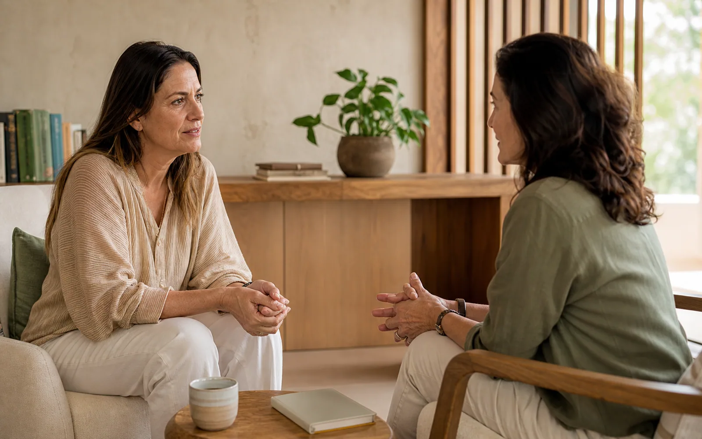

Ciência e saúde · capa
Música, cérebro e vínculo
O que novas pesquisas ajudam a compreender sobre memória, emoção e convivência.
Leitura principal · 6 min
 Revista Potala
Edição de apresentação · 01
Revista Potala
Edição de apresentação · 01
Mundo · cuidado · consciência
Selecionamos acontecimentos que merecem atenção e os aproximamos da ciência, da filosofia, da saúde integral e da experiência humana.
Ler com calma01
Edição de apresentação
O que novas pesquisas ajudam a compreender sobre memória, emoção e convivência.
Leitura principal · 6 min
Envelhecer com autonomia envolve corpo, vínculos e participação na comunidade.
7 min de leitura
Como mudanças no ambiente alcançam o corpo, o descanso e a rotina.
5 min de leitura
Por que criar e compartilhar arte fortalece comunidades e abre novas conversas.
4 min de leituraO que esta notícia nos ensina?